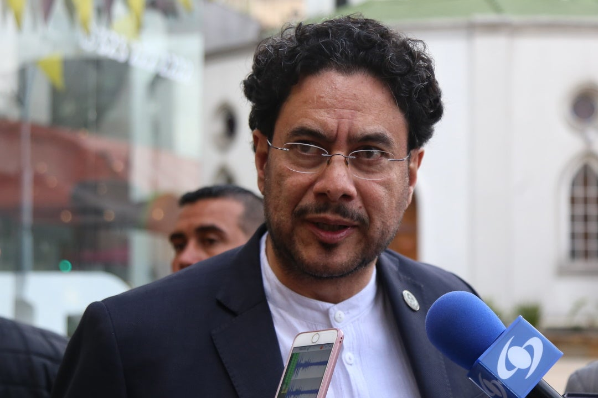

Economía colombiana en 2025
El gobierno anunció nuevas medidas para fortalecer la economía y reducir la desigualdad social. Expertos opinan que las reformas podrían tener efectos positivos a mediano plazo.


Asociación de Técnicos Pensionados de la EDT


Conformada por: Presidente. Alfredo Perez. Fiscal: Roberto Donado. Secretario: Cesar Solsno. Tesorero: Timoleon Guarguati. Vocales: Gilberto Salas. Jose Suarez. Jose Rodriguez.


El gobierno anunció nuevas medidas para fortalecer la economía y reducir la desigualdad social. Expertos opinan que las reformas podrían tener efectos positivos a mediano plazo.
Las startups tecnológicas están creciendo en toda la región. Colombia se posiciona como uno de los países líderes en innovación digital.
El Ministerio de Educación propone incluir programación y pensamiento lógico en los colegios públicos desde el nivel primario.

El senador colombiano Iván Cepeda ganó este domingo en Colombia la consulta del Partido de coalición Pacto Histórico (izquierda) que reportó más de 2,5 millones de votos y se convirtió en el candidato de la izquierda para las elecciones presidenciales que se realizarán en 2026.

El presidente Gustavo Petro ratificó su compromiso con la protección de los fondos de pensiones y anunció nuevos mecanismos de control y transparencia.
de aproximadamente $880 mil millones y la creación de unos 193 mil empleos directos e indirectos. La festividad espera recibir a unos 780 mil asistentes y se estima que se venderán 2.1 millones de entradas. Este impacto se distribuirá en sectores como el turismo, la hotelería, la gastronomía, el transporte y el comercio en general.
El gobierno nacional anunció un ambicioso paquete de reformas económicas que busca fortalecer la inversión, mejorar la equidad social y reducir la brecha de ingresos entre regiones. Según el ministro de Hacienda, el plan contempla incentivos tributarios para pequeñas y medianas empresas, apoyo a la formalización laboral, una estrategia de modernización tecnológica y programas de inversión pública en infraestructura sostenible. Estas medidas, presentadas por el Ministerio de Hacienda y el Departamento Nacional de Planeación, se enmarcan dentro del plan “Colombia Productiva 2025”, cuyo objetivo principal es lograr un crecimiento económico sostenido superior al 4% anual durante los próximos cinco años. Entre las reformas más destacadas se encuentra la creación de un Fondo Nacional para la Innovación y el Empleo, destinado a financiar proyectos de transformación digital y capacitación laboral en regiones históricamente rezagadas. Este fondo se nutrirá con recursos provenientes de la reforma tributaria progresiva aprobada a finales de 2024, que aumentó los impuestos a las rentas más altas y redujo la carga a las microempresas. Los analistas económicos han recibido las medidas con moderado optimismo. Para María Fernanda Gómez, economista de la Universidad Nacional, “el paquete fiscal es ambicioso, pero si se ejecuta con disciplina y transparencia, puede marcar el inicio de un nuevo ciclo de crecimiento sostenible”. Sin embargo, también advirtió que “la clave estará en mantener la estabilidad fiscal y el control de la inflación, especialmente en un contexto internacional de tasas de interés altas y volatilidad cambiaria”. Por su parte, el sector empresarial ha valorado positivamente los incentivos a la inversión en energías renovables y tecnología verde, pues podrían generar más de 150.000 empleos nuevos en los próximos tres años. El presidente de la ANDI, Bruce Mac Master, señaló que “la transformación productiva que propone el Gobierno podría posicionar a Colombia como un actor regional en innovación, siempre y cuando se garantice la seguridad jurídica para los inversionistas”. En cuanto a los hogares colombianos, el gobierno proyecta que el plan económico reducirá en un 10% el costo promedio de los alimentos básicos, gracias a una mejora en la logística y la infraestructura rural. También se contempla una ampliación del subsidio al transporte público en las principales ciudades, con el fin de aliviar el gasto de las familias de menores ingresos. Finalmente, el Banco de la República respaldó la iniciativa, pero subrayó la necesidad de evitar un sobreendeudamiento estatal. En su más reciente informe, el organismo central recomendó mantener la tasa de interés estable hasta observar resultados concretos en la inflación, que cerró 2024 en 6,8%, según el DANE. En conclusión, el 2025 se perfila como un año decisivo para la economía colombiana. Si las reformas se implementan de manera efectiva y se logra el equilibrio entre crecimiento, equidad y estabilidad, Colombia podría consolidar una de las economías más dinámicas de América Latina durante la segunda mitad de la década. “Queremos una economía más competitiva, más justa y que funcione para todos los colombianos, no solo para unos pocos sectores”, afirmó el funcionario durante la presentación del proyecto.
Las startups tecnológicas están creciendo en toda la región. Colombia se posiciona como uno de los países líderes en innovación digital. La educación digital (edtech) también ha crecido de forma notable con plataformas que ofrecen cursos virtuales, simuladores de programación, herramientas para colegios y sistemas de aprendizaje adaptativo. Estas soluciones han sido adoptadas por instituciones educativas en Perú, México y Argentina, consolidando la presencia colombiana en el mercado regional. Expertos afirman que uno de los desafíos principales para mantener el ritmo de crecimiento será fortalecer la infraestructura tecnológica, mejorar la conectividad en zonas rurales y fomentar políticas que impulsen la investigación y el desarrollo. Sin embargo, las proyecciones para el 2025 y 2026 son optimistas: se espera que la industria tecnológica contribuya con más del 6% del PIB nacional, una cifra histórica para el país. En resumen, Latinoamérica vive un momento de transformación, y Colombia se destaca como un protagonista clave en la innovación y el desarrollo tecnológico. Con un ecosistema emprendedor robusto, un talento digital en expansión y un interés creciente por parte de inversionistas globales, el país se perfila como un referente en tecnología dentro y fuera de la región. En materia de gobierno digital, Colombia continúa avanzando hacia la modernización de los servicios públicos mediante portales electrónicos, atención ciudadana automatizada y procesos administrativos basados en inteligencia artificial. Esto ha mejorado la transparencia, reducido trámites y facilitado la interacción entre los ciudadanos y el Estado.
El Ministerio de Educación propone incluir programación y pensamiento lógico en los colegios públicos desde el nivel primario. El Ministerio de Educación Nacional anunció una ambiciosa estrategia para transformar el sistema educativo colombiano mediante la inclusión de programación, robótica y pensamiento lógico desde los primeros años de la educación básica. Según explicó la ministra de Educación, María Victoria Angulo, la iniciativa pretende que los niños “no solo aprendan a usar la tecnología, sino a crearla”. El programa comenzará con un plan piloto en 300 colegios públicos de 20 departamentos, donde se implementarán módulos de pensamiento computacional, algoritmos básicos, lógica y programación visual adaptada a la edad de los estudiantes. “Queremos que nuestros niños y niñas desarrollen habilidades del siglo XXI: resolución de problemas, pensamiento crítico y creatividad digital. No se trata de reemplazar materias tradicionales, sino de integrarlas con la tecnología”, señaló la ministra durante la presentación oficial del programa. La estrategia cuenta con el apoyo de organismos internacionales como la UNESCO y el Banco Interamericano de Desarrollo (BID), que han destacado el potencial de Colombia para convertirse en un referente regional de educación digital inclusiva. Además, empresas tecnológicas nacionales e internacionales han manifestado su interés en participar a través de donaciones de equipos, capacitación docente y desarrollo de contenidos interactivos. El plan contempla la formación de más de 25.000 docentes en competencias digitales y didácticas de programación, a través de cursos en línea y talleres presenciales. Para garantizar la cobertura, el Ministerio anunció una inversión de más de 200.000 millones de pesos en infraestructura tecnológica, conectividad y material educativo. Expertos en pedagogía destacan que enseñar programación desde edades tempranas no solo fortalece las competencias digitales, sino que también mejora el razonamiento matemático y la resolución lógica de problemas. Según un estudio del Observatorio de Innovación Educativa de la Universidad Nacional, los estudiantes que reciben formación en pensamiento computacional tienen hasta un 30% más de capacidad para estructurar procesos complejos y planificar soluciones eficientes. Por otro lado, algunos docentes advierten que los principales desafíos estarán en la formación del profesorado y en garantizar la conectividad de los colegios rurales, donde aún hay limitaciones de acceso a internet y dispositivos. El Gobierno, en respuesta, anunció que la segunda fase del proyecto incluirá la entrega de aulas digitales móviles y la ampliación del programa “Computadores para Educar”. En palabras de la ministra Angulo: “El futuro digital de Colombia comienza en las aulas. La educación tecnológica no es un lujo, es una necesidad para construir una sociedad más justa, innovadora y competitiva”. Con esta apuesta, Colombia se une a países como Estonia, Finlandia y Corea del Sur, que ya integran la programación y el pensamiento lógico en sus planes de estudio desde la primaria. Si el plan logra consolidarse, la nación podría dar un paso decisivo hacia una educación moderna y conectada con el futuro. El proyecto, denominado “Futuro Digital 2030”, busca preparar a las nuevas generaciones para los retos de la cuarta revolución industrial y reducir la brecha tecnológica entre zonas urbanas y rurales.
El senador colombiano Iván Cepeda Castro, reconocido líder del movimiento progresista y defensor de los derechos humanos, resultó vencedor este domingo en la consulta popular del Pacto Histórico, coalición de izquierda que agrupa a varios partidos y movimientos sociales. Los resultados fueron anunciados por la Registraduría Nacional del Estado Civil en la noche del domingo, confirmando que Cepeda superó ampliamente a sus contendores internos dentro del bloque, entre ellos líderes de los sectores ambientalistas, sindicales y estudiantiles. La jornada electoral transcurrió con normalidad, registrando una alta participación en zonas urbanas y un creciente interés de los jóvenes en los procesos políticos. En su discurso de victoria, pronunciado en la Plaza de Bolívar de Bogotá ante miles de simpatizantes, Cepeda agradeció el respaldo ciudadano y destacó que su triunfo “no es personal, sino un mandato colectivo para construir una Colombia más justa, más democrática y en paz”. Asimismo, prometió impulsar una agenda centrada en la justicia social, la transición energética, la lucha contra la corrupción y la reforma agraria integral. “Esta victoria no es el final de una campaña, sino el inicio de una transformación. Vamos a gobernar con la gente, desde los territorios, con respeto por la diferencia y con la convicción de que la política debe ser un instrumento de dignidad”, afirmó el candidato. El presidente Gustavo Petro felicitó públicamente a Cepeda por su triunfo, calificándolo como “una figura clave para la continuidad del proyecto progresista en Colombia”. Petro destacó que la elección del senador es una muestra de la madurez democrática del Pacto Histórico y del fortalecimiento de los movimientos alternativos en el país. Diversos analistas políticos consideran que la victoria de Cepeda representa una renovación del liderazgo dentro de la izquierda colombiana, especialmente en un contexto en el que el país enfrenta desafíos en materia económica, ambiental y de seguridad. Para el politólogo Luis Fernando Ramírez, “la candidatura de Iván Cepeda unifica a un sector que busca mantener las banderas del cambio, pero con una visión más dialogante y de consenso”. El nuevo candidato del Pacto Histórico iniciará una gira nacional en las próximas semanas para consolidar su base de apoyo y construir alianzas con otros movimientos sociales y sectores independientes. Su equipo de campaña anunció que los ejes principales del programa serán la educación pública gratuita, la economía verde, la ampliación de derechos laborales y la defensa de la paz total. Con más de 2,5 millones de votos, Cepeda se consolidó como el nuevo candidato presidencial para las elecciones de 2026, marcando un nuevo capítulo en el panorama político colombiano.
El presidente Gustavo Petro ratificó su compromiso con la protección de los fondos de pensiones y anunció la implementación de nuevos mecanismos de control y transparencia dentro del sistema pensional colombiano. Estas medidas buscan garantizar la seguridad financiera de los trabajadores y asegurar que los recursos destinados a su jubilación sean administrados de manera responsable y equitativa. “Nuestro objetivo no es desmantelar lo construido, sino corregir las inequidades que durante años han afectado a los trabajadores de menores ingresos. Queremos un sistema solidario, donde quienes más tienen aporten para garantizar la vejez digna de quienes más lo necesitan”, afirmó Petro durante su intervención. Según el Ministerio de Hacienda, una de las principales innovaciones será la creación de un Observatorio de Transparencia Pensional, encargado de monitorear los movimientos financieros de los fondos y de publicar informes trimestrales accesibles al público. Esta iniciativa busca frenar posibles irregularidades y fortalecer la confianza ciudadana en el sistema. Además, se anunció que los trabajadores con ingresos inferiores a cuatro salarios mínimos continuarán cotizando en Colpensiones, mientras que los de mayores ingresos podrán mantener aportes complementarios en fondos privados, con el fin de preservar la libre elección y la estabilidad del mercado financiero. Expertos en economía y seguridad social destacan que esta actualización del modelo pensional representa un paso importante hacia un sistema más sostenible, pero advierten sobre los retos que implica su implementación. La economista María Fernanda Gutiérrez señaló que “el éxito de la reforma dependerá de la capacidad del Estado para gestionar los recursos con independencia política y rigor técnico”. El Gobierno confirmó que el nuevo modelo será presentado ante el Congreso de la República en el primer semestre de 2026, acompañado de una campaña pedagógica para informar a los ciudadanos sobre los cambios y beneficios de la reforma. Durante una alocución nacional desde la Casa de Nariño, el mandatario explicó que la reforma pensional en curso no busca eliminar los fondos privados, sino fortalecer el papel del Sistema Público de Pensiones (Colpensiones), mejorando su eficiencia y asegurando una distribución más justa entre los cotizantes.
El Carnaval de Barranquilla 2025 se perfila como uno de los eventos culturales más importantes en la historia reciente de Colombia, con un impacto económico estimado en 880 mil millones de pesos y la generación de cerca de 193 mil empleos directos e indirectos. La festividad, reconocida por la UNESCO como Obra Maestra del Patrimonio Oral e Inmaterial de la Humanidad, promete ser un motor clave para la economía del Caribe colombiano. El impacto económico se distribuirá en múltiples sectores: turismo, hotelería, gastronomía, transporte y comercio en general, consolidando al carnaval como uno de los pilares del desarrollo regional. Hoteles y aerolíneas ya reportan niveles de ocupación superiores al 90%, mientras que restaurantes, bares y tiendas locales se preparan para recibir un flujo masivo de visitantes. La directora de Carnaval S.A.S., Sandra Gómez, destacó que este año se busca combinar la tradición con la innovación, fortaleciendo la sostenibilidad del evento. “Queremos que el Carnaval 2025 sea un ejemplo de cómo la cultura puede impulsar el crecimiento económico y, al mismo tiempo, promover la preservación de nuestras raíces y expresiones artísticas”, señaló. Entre las novedades de esta edición se incluye la Ruta del Patrimonio Cultural, un circuito que conectará los principales escenarios del carnaval con espacios históricos y museos de la ciudad, además de una agenda académica sobre economía creativa y turismo cultural. El gobierno nacional, por su parte, anunció una inversión adicional en infraestructura y seguridad para garantizar el éxito del evento. El Ministerio de Comercio, Industria y Turismo confirmó el fortalecimiento de campañas de promoción internacional en países como Estados Unidos, España y México, con el fin de posicionar el Carnaval de Barranquilla como un destino turístico global. Expertos del sector cultural coinciden en que esta edición del carnaval representa una oportunidad única para demostrar cómo las industrias creativas pueden dinamizar la economía y generar empleo, especialmente en regiones con alto potencial turístico. Con su inconfundible alegría, colores, música y tradición, el Carnaval de Barranquilla 2025 no solo será una fiesta, sino una celebración del talento y la identidad del pueblo colombiano, proyectando al Caribe como epicentro de cultura, creatividad y desarrollo. Según cifras presentadas por la Alcaldía de Barranquilla y el Ministerio de Cultura, se espera la llegada de más de 780 mil asistentes, entre turistas nacionales y extranjeros, quienes disfrutarán de los tradicionales desfiles, comparsas, conciertos y muestras gastronómicas que caracterizan esta celebración. Además, se proyecta la venta de más de 2,1 millones de entradas a los diferentes eventos oficiales y privados del carnaval.

Josabeth Carolina Morales Durán, representante del barrio Olaya Herrera, Sector Central, en el Reinado de la Independencia de Cartagena 2025: Barrio y Sector: Olaya Herrera, Sector Central. Edad y Profesión: Tiene 20 años y es Ingeniera Industrial. Logros Destacados: Ganó el premio al mejor disfraz en la Noche de Tradición Festiva con un homenaje al cantante de salsa Joe Arroyo, conocido como "el Centurión de la salsa". Proyecto Comunitario: Su proyecto se titula "Olaya vive las fiestas bogando nuestra identidad". Objetivo del Proyecto: Busca mantener viva la tradición del 11 de noviembre en la memoria de niños, jóvenes y adultos, a través de actividades culturales como cabildos. Trayectoria: Es una joven que, según fuentes locales, encarna el espíritu vibrante y la fuerza comunitaria de su barrio. También se ha mencionado que ha brillado en otros espacios, como el programa televisivo "Desafío". Presentación Oficial: Su presentación oficial como candidata tuvo lugar en el Camellón de los Mártires, un evento que marcó el inicio de las fiestas. Josabeth Carolina Morales Durán.

El ministro de Defensa, Pedro Sánchez, atribuyó a las disidencias de alias Iván Mordisco el atentado con carrobomba que fue perpetrado en la madrugada de este lunes festivo cerca de la estación de Policía del municipio de Suárez, Cauca, dejando como saldo dos personas muertas. “Rechazo el cobarde atentado terrorista perpetrado por las disidencias del narco-criminal alias Mordisco en Suárez, Cauca, mediante un vehículo cargado con explosivos, lanzamiento de cilindros y ráfagas de fusil que habrían asesinado a dos civiles y herido a un policía”, escribió el ministro en su cuenta de X.Agregó que “este hecho demuestra el desespero cobarde de la estructura criminal ante la pérdida de control territorial y el debilitamiento de sus finanzas ilegales derivadas del narcotráfico, la minería ilegal y la extorsión, esto como resultado de la presión sostenida de nuestras Fuerzas Militares y de Policía”.El jefe de la cartera de Defensa ofreció hasta $200 millones de recompensa por información que “permita anticipar y evitar hechos similares”. Asimismo, anunció que se reunió este lunes con la cúpula militar y policial, y después lo hará con autoridades regionales para fortalecer las operaciones que se han adelantando en Valle del Cauca, Cauca y Nariño, “donde hemos neutralizado a 724 integrantes de los GAO (23 % más que en el 2024)”, destacó.

Juan Gabriel, el artista que siempre pensó en la eternidad.

El Giro de RIGO; mas de 8.000 ciclistas dieron inicio al primer evento en la ciudad de barranquilla de esta categoria

Trump cuestiona una guerra con Venezuela, pero advierte que Maduro tendría los días contados.

Gobierno anuncia nuevas medidas tras denuncias de líderes sociales.